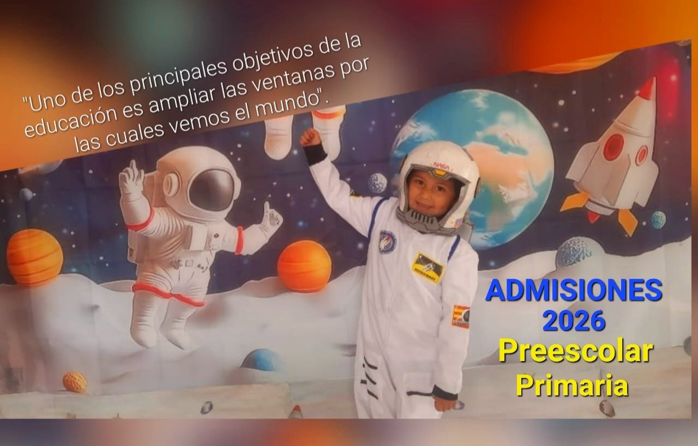

Our Educational Philosophy
At Gimnasio Campestre Marcello IAFrancesco, we believe that education is more than just academic performance. It is about fostering a lifelong love for learning. Our "Educational Project" (PEI) is built on three main pillars:
- Montessori Inspiration: We provide environments that allow students to lead their own discovery journey.
- Values & Integrity: Every lesson is infused with values like respect, honesty, and empathy.
- Campestre Environment: Our campus in Cajicá offers wide open spaces where students connect with nature every day.
Educational Levels & Programs
Loading programs...
Life at Marcello

Future Explorers
Our students are encouraged to dream big and reach for the stars.